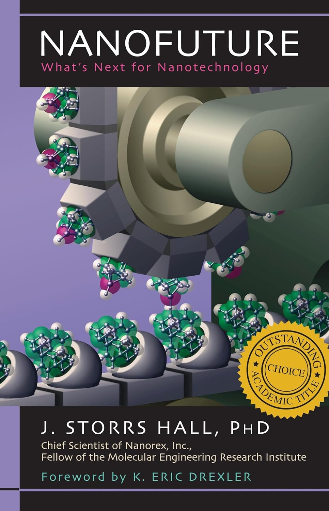

Book Review: Nanofuture
26 November 2025

Ever since completing Where is my Flying Car, I've been eager to get to the bottom of this whole nanotechnology thing: Hall proposes fantastical applications, and the favorable review by Jason Crawford also piqued my interest. The two options for followup seemed to be Nanofuture also by J. Storrs Hall, or Engines of Creation by Drexler. I went with Nanofuture. It was a quick read, the book itself is rather short.
Nanofuture, published 2005, is decisively aimed at the lay audience, and it's very clear to see how this is the prequel, rough-around-the-edges version of Where is my Flying Car. The first half of the book explains what nanotechnology is and some of the basic mechanics, and the second half dives into applications and some futurist speculation. I was really hoping for something more technical, as I already had the gist of how nanotech works and wanted a bit more of the nitty-gritty.
So, what *is* nanotechnology? It's not merely materials that are measured on the nanoscale: it's atomically precise manufacturing of everything: mostly using grids of carbon atoms, making everything as strong as diamonds and as light as feathers (often lighter).
And not just weight and strength: think engines that are orders of magnitudes more powerful, fantastic designs of flying cars (hint hint), massively more performant computers, the list goes on.
Can nanotechnology exist? Why doesn't it already exist? Well, nanotechnology already *does* exist in two domains: the evolution-guided biotechnology of our cells, and the almost-atomically-precise computer chips in our devices. But both of these are narrow domains: cells manufacture machines (proteins) by having the parts (amino acids) bounce around in the factory (cell) until the the part pops into place. Chips are not quite atomically precise, and are passing electrons back in forth on a thin 2-dimensional wafer. True nanotech (or mechanosynthesis, or atomically precise manufacturing) will be general, and thereforce much more transformative.
Hall marks out 5 stages of nanotech, and thinks the transformative stage 5 is 25-50 years away. Of course this was written in 2005, and the lack of progress is probably a large part of the impetus for him to write Where is my Flying Car. But on another note, he did write
So what do I make of all this? I have to say, nanotechnology has been causing me to lose some sleep. The phrase "atomically precise" echoes in the back of my head from time to time, like the "Fullmetal Alchemist" transitions in FMA:B. If such a transformative technology is sitting there, out in the open, why hasn't anyone seized it? The answer, I think, is science and engineering is hard, and unplucked fruits can sit idle for a long time, simply out of apathy, or distraction, and often because the fruit are often much higher-hanging than expected. It's telling that the current two instances of nanotechnology had smooth evolutionary processes (literally with biotech; through the continuous increasing utility of faster processors with chips); it would be very hard to jump straight to true atomically precise manufacturing, even with an awareness of the potential benefits. Hall understands the challenges and proposes something of a manhattan project to solve this.
Before I get to the summary of chapters and takeaways, I wanted to map out the next steps with investigating nanotech for me. First, I'd like to read some of the research The Foresight Institute is putting out on nanotech. Second, I need to investigate what Phillip Turner has been getting up to in his open-source project. Third, I was reached out to by an Atomic Machines recruiter, and need to learn more about MEMS and existing startups, including Atomic Semi. Fourth, I've started reading Artificial Chemistries by Banzaf and Yamamoto, and hope that might have insights on the biotech side.
Anyway, on to the summary.
Summary
- Forward: a nice endorsement by Drexler.
- Chapter 1: general overiew, along with the 5 stages of nanotech progress.
- Chapter 2: is nanotech "for real" (yes), how/when/where nanotech will happen, failures of imagination (!! to be seen again in WIMFC).
- Chapter 3: current nanotech: carbon nanotubes, scanning probe microscopy (SPM), life/ribosomes/biotech.
- Chapter 4: some clarifications about quantum effects, everything is shakey/spongey which means everything has to be diamondoid (carbon), a diatribe about VLSIs.
- Chapter 5: the literal nuts and bolts at the nano-level. Scaling laws, diamond structures, bearings, motors, pumps, a sorting rotor, the idea of "autogeny" (Hall's personal website used to be autogeny.com), which is a set of machines that can make the same set of machines.
- Chapter 6: nanotech engines will have 1-3 OOMs more power per weight. A long diatribe about the Newcomen engine and a Moore's Law for engines.
- Chapter 7: bits at the nanoscale. OOMs improvement in compactness (continuing the literal Moore's Law) and OOMs improvement in clock time. A strangely large amount of time is spent talking about the second law of thermodynamics, and how when bits are erased in a nanotech storage device, the energy has to "go" somewhere. Interesting.
- Chapter 8: self-replication, and nanomachines: the nanotech future will have general nanomachines, like a robotic arm being fed atoms to select from, but also more specialized machines that have much higher performance. This is just like our current world, just much more performant.
- Chapter 9: this is where there is a fairly sharp pivot from explaining the nuts and bolts, to more futurist speculation. There will be a "home synthesizer" (like a personal 3d printer that prints *everything*); micrometer-thin nanosuits with fantastic abilities; virtual reality will have incredible bio-molded capabilities, and individuals can choose to live in currently-harsh locations. The libertarian's paradise!
- Chapter 10: a small chapter on economics. When everyone has the universal printer, where the cost of raw inputs is miniscule, explosive economic growth results. The only challenge is to prevent the first company that creates the synthesizer from extracting huge monopoly rents.
- Chapter 11: the flying car chapter :) (and other transportation details).
- Chapter 12: space travel becomes much cheaper, and many more people choose to live on homesteads in space (enter Oneill cylinders). Here Hall also poopoos space elevators in favor of a "space pier": a series of towers 60 miles high and 240 miles long that raise mass to 60 miles and then slingshots it into orbit (cheap!).
- Chapter 13: robots have tiny mass and huge capabilities. This is where Hall's "utility fog" makes an appearance: a soup of microscopic, general-purpose nanomachines that can change your immediate environment into whatever you desire (utility like utility belt).
- Chapter 14: a weirdly prescient chapter on artificial intelligence. He has this weird diatribe about what is essentially Q-Learning from RL. The main point though, is that intelligence follows the same Moore's Law as compute, and we should expect cheap human-level intelligence in say, 20 years or so. Spot on!
- Chapter 15: why runaway replicators are not a concern. Such replicators need fuel to continue to replicate, which they can be starved of. The scariest replicator is the aerovore, which floats in air, sucking up carbon dioxide for material and sunlight for energy. These are rather delicate and complex though, and again, it would work more like fire where a spark could set off a conflagration that then burns itself out, rather than some apocalyptic scenario.
- Chapter 16: what Hall is worried about though, is nano-engineered viruses, and other dangerous biotech. He's also worried about race dynamics between great powers (also prescient to EA thought).
- Chapter 17: the longevity chapter: nanomachines would of course transform medicine, since they can intervene inside the body. They can't quite go inside cells (they're too big), but could act as a sort of doctor for individual cells. Aubrey de Grey and Robert Freitas appear here. He also (correctly) brushes off ethical concerns.
- Chapter 18: the actual transhumanism chapter. I was kind of yawning through this one, but sure, transhumanism becomes a lot easier with nanotech.
- Chapter 19: this was kind of a summary, and talked about some of the social implications (e.g. a great expansion in the usable space, since people can travel further and into space). More libertarian vibes: he also talked about how, if you don't like this vision of the future, you can just choose to not use the nanotech.
Now for takeaways.
- The nanotech designs and mechanics are there, but I have so many lingering questions: if the robotic arm is hundreds of atoms across, how is it's motion programmed? Won't the software be larger than the hardware? And how to get there, following the Feynmannian path of 4x smaller multiple times?
- The ceiling is high: this was Crawford's takeaway from Where is my Flying Car. The potential for vastly better versions of every physical device is out there.
Overall, I enjoyed the first half, up to chapter 8, but besides that it was a less elegant rehash of Where is my Flying Car. In fact, it's easy to see how this book evolved into WIMFC, and the refinements that ocurred.
Next up: my Braben review (I finished that book). I also just finished Martin Gurri's Stripe book, so I'm at 6 down, 13 to go.